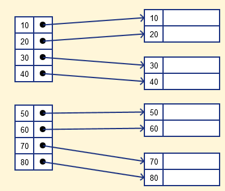
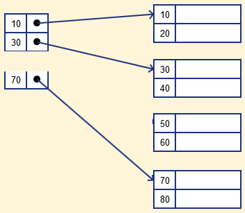

Это практики которые позволяют разработчикам чаще и надёжнее развёртывать изменения ПО. СI/CD - одна из DevOps практик и также относится к Agile - практике.
Непрерывная интеграция (CI) - методология разработки при которой в код вносятся небольшие изменения с частыми коммитами. И поскольку большинство современных приложений разрабатываются с использованием различных платформ и инструментов, то появляется необходимость в механизме интеграции и тестировании вносимых изменений.
Цель CI - обеспечить автоматизированный и последовательный способ сборки, упаковки и тестирования приложений
Цель CD - автоматизировать развёртывание приложений в различные окружения.
9586
подробнее
9586
Последовательность команд SQL, которые должны быть выполнены полностью или не выполнены вообще.
START TRANSACTION;
SELECT ...;
UPDATE ...;
INSERT ...;
ДРУГИЕ ЗАПРОСЫ ...;
COMMIT; // для записи в базу данных всех запросов
или
ROLLBACK; // для отмены всех изменений которые выполнила транзакция
- Команды COMMIT или ROLLBACK
- ALTER_TABLE или CREATE_TABLE фиксируют все транзакции
- Сбой СУБД откатывает все транзакции
- Сбой клиента СУБД откатывает все транзакции после тайм-аута
Режим в котором после выполнения каждой команды SQL автоматически фиксируется транзакция
По умолчанию этот режим включён в PostgreSQL
Это метод структуры данных, который позволяет вам быстро извлекать записи из файла базы данных. Индекс – это небольшая таблица, имеющая всего два столбца. Первый столбец содержит копию первичного или потенциального ключа таблицы. Его второй столбец содержит набор указателей для хранения адреса дискового блока, где хранится это конкретное значение ключа.
Индексация ускоряет фильтрацию, объеденение и сортировку данных по столбцу (если для этого столбцов существует индекс)
Почему повсеместно не использовать индексы? - Изменение данных в индексированном столбце влечёт за собой обновление самого столбца, что при большой нагрузке на базу, существенно уменьшит производительность. Индексирование улучшает работу чтения, но ухудшает работу записи
Индексация базы данных определяется на основе ее атрибутов индексации. Два основных типа методов индексации:
Первичный индекс
Вторичный индекс
Создание
CREATE INDEX имя-таблицы_имя-стобца_idx ON имя-таблицы(имя-столбца)
Удаление
DROP INDEX имя-таблицы_имя-стобца_idx ON имя-таблицы(имя-столбца)
Это файл c двумя полями. Первое поле – это первичный ключ, второе поле указывает на блок данных. В первичном индексе всегда существует отношение один к одному между записями в таблице индекса.
Первичная индексация также делится на два типа.
Плотный индекс
Разреженный индекс
В плотном индексe запись создается для каждого поискового ключа. Это помогает выполнять поиск быстрее в сравнении с разреженным индексированием, но требует больше места для хранения записей индекса. В этом индексировании записи метода содержат значение ключа поиска и указывают на реальную запись на диске.

В разрежённом индексe запись создается только для некоторых поисковых ключей. Разреженный индекс поможет вам решить проблемы плотного индексирования. Ему требуется меньше места, меньше затрат на обслуживание для вставки и удаления, но он медленнее по сравнению с плотным индексом для поиска записей.

Вторичный индекс может быть создан с помощью поля, которое имеет уникальное значение для каждой записи, и это должен быть потенциальный ключ. Он также известен как некластеризованный индекс. перечитать, тут все ответы на все вопросы https://habr.com/ru/post/247373/
Superkey (суперключ) - комбинация атрибутов (столбцов), которые уникально идентифицируют каждую строку таблицы. Это могут быть и все столбцы, и несколько и и один. При этом строки, которые содержат значения этих атрибутов, не должны повторяться.
Например, у нас есть сущность Student, которая представляет данные о пользователях и которая имеет следующие атрибуты:
- FirstName (имя)
- LastName (фамилия)
- Year (год рождения)
- Phone (номер телефона)
Какие атрибуты в данном случае могут составлять суперключ:
- {FirstName, LastName, Year, Phone}
- {FirstName, Year, Phone}
- {LastName, Year, Phone}
- {FirstName, Phone}
- {LastName, Phone}
- {Year, Phone}
- {Phone}
Каждого студента уникально может идентифицировать телефонный номер, поэтому любые наборы, в которых встречается атрибут Phone, представляют суперключ.
А вот, к примеру, набор {FirstName, LastName, Year} не является суперключом, так как у нас теоретически могут быть как минимум два студента с одинаковыми именем, фамилией и годом рождения.
Candidate key (потенциальный ключ) - представляет собой минимальный суперключ отношения (таблицы), то есть набор атрибутов, который удовлетворяет ряду условий: Неприводимость: он не может быть сокращен, он содержит минимально возможный набор атрибутов Уникальность: он должен иметь уникальные значения вне зависимости от изменения строки Наличие значения: он не должен иметь значения NULL, то есть он обязательно должен иметь значение. Возьмем ранее выделенные суперключи и найдем среди них candidate key. Первый пять суперключей не соответствуют первому условию, так как все их можно сократить до суперключа {Phone}: {FirstName, LastName, Year, Phone} {FirstName, Year, Phone} {LastName, Year, Phone} {FirstName, Phone} {LastName, Phone} {Year, Phone} Суперключ {Phone} соответствует первому и второму условию, так как он имеет уникальное значение (в данном случае все пользователи могут иметь только уникальные телефонные номера). Но соответствует ли он третьему условию? В целом нет, так как теоретически студент может и не иметь телефона. В этом случае атрибут Phone будет иметь значение NULL, то есть значение будет отсутствовать. В то же время это может зависеть от ситуации. Если в какой-то систему номер телефона является неотъемлемым атрибутом, например, используется для регистрации и входа в систему, то его можно считать потенциальным ключом. Но в данном случае мы рассматриваем общую ситуацию. И для понимания потенциального ключа необходимо отталкиваться от конкретной системы, которую описывает база данных. И в таком случае суперключи таблицы не содержат потенциального ключа.
9586
9586
9586